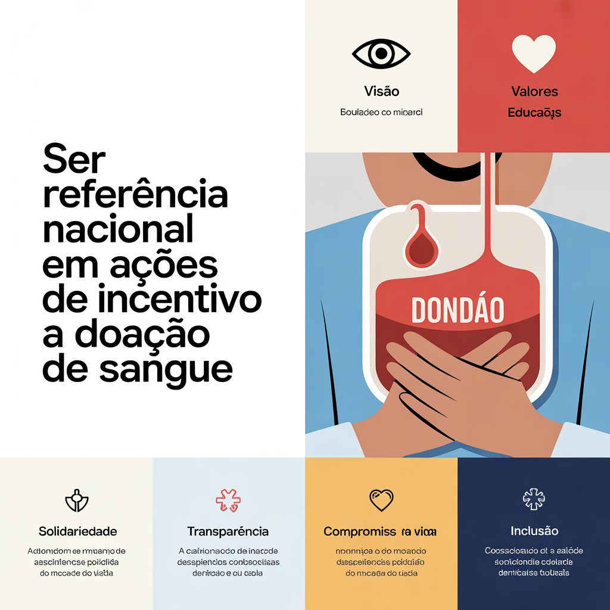

Visão e Valores
👁️ Visão Ser referência nacional em ações de incentivo à doação de sangue, construindo uma sociedade mais solidária, informada e comprometida com a saúde coletiva. 💖 Valores Solidariedade: Acreditamos no poder de ajudar o próximo sem esperar nada em troca. Transparência: Atuamos com ética e clareza em todas as nossas ações. Compromisso com a vida: Cada ação é guiada pela urgência de salvar vidas. Educação: Informar é transformar. Investimos em campanhas educativas e acessíveis. Inclusão: Toda pessoa pode ser parte da mudança, independentemente de sua origem.
